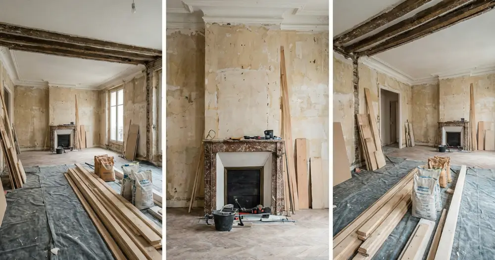

Rénover un appartement à Paris en 2026 représente un investissement considérable qui nécessite une planification budgétaire rigoureuse. Entre l'inflation des matériaux, l'évolution des normes énergétiques et la spécificité du marché parisien, les coûts de rénovation ont connu des variations significatives. Que vous souhaitiez rafraîchir votre intérieur ou entreprendre une rénovation complète, connaître les prix pratiqués en Île-de-France vous permettra de budgétiser efficacement votre projet. Ce guide détaillé vous présente les tarifs actuels, les facteurs influençant les coûts et nos conseils d'experts pour optimiser votre budget rénovation.
Tarifs moyens rénovation appartement Paris 2026
En 2026, les prix de rénovation d'appartement à Paris oscillent entre 800€ et 2500€ par m² selon l'ampleur des travaux. Pour une rénovation légère (peinture, revêtements, électricité de surface), comptez 800€ à 1200€/m². Une rénovation intermédiaire incluant cuisine, salle de bain et cloisons coûte entre 1200€ et 1800€/m². La rénovation lourde avec restructuration complète atteint 1800€ à 2500€/m². Ces tarifs parisiens sont supérieurs de 20 à 30% à la moyenne nationale en raison des contraintes logistiques, du coût de la main-d'œuvre et des spécificités architecturales haussmaniennes. Pour un appartement de 60m², prévoyez donc un budget de 48 000€ à 150 000€ selon vos ambitions.
Rénovation par type d'appartement parisien
Les appartements haussmanniens nécessitent des interventions spécifiques (moulures, parquet ancien, hauteur sous plafond) majorant les coûts de 15%. Les studios modernes permettent des économies d'échelle avec des prix débutant à 700€/m². Les lofts et duplex demandent une expertise particulière, avec des tarifs pouvant atteindre 3000€/m² pour les rénovations haut de gamme.
Détail des coûts par poste de rénovation
La cuisine représente généralement 25 à 30% du budget total, soit 8 000€ à 25 000€ pour une cuisine parisienne équipée. La salle de bain coûte entre 6 000€ et 18 000€ selon la surface et les équipements choisis. Les travaux d'électricité aux normes 2026 s'élèvent à 80€ à 120€/m², tandis que la plomberie varie de 60€ à 100€/m². La peinture et les revêtements représentent 40€ à 80€/m². L'isolation, devenue prioritaire avec les nouvelles réglementations thermiques, coûte 50€ à 120€/m². Les cloisons et l'aménagement intérieur oscillent entre 200€ et 500€/m² selon la complexité. N'oubliez pas les frais annexes : permis, études techniques et assurances représentent 5 à 8% du budget total.
Coûts spécifiques à Paris et l'Île-de-France
En région parisienne, ajoutez 200€ à 400€ par jour pour l'évacuation des gravats, les contraintes de stationnement et les horaires de chantier restreints. La syndic et les autorisations de travaux en copropriété engendrent des frais supplémentaires de 500€ à 1500€. Les matériaux coûtent 10 à 15% plus cher qu'en province en raison des frais de transport et de stockage.
Facteurs influençant le prix de rénovation en 2026
Plusieurs éléments font varier significativement les coûts de rénovation parisienne. L'état initial du logement détermine l'ampleur des travaux : un appartement des années 70 nécessitera une mise aux normes électriques complète, contrairement à un bien récent. La surface influence le prix au m² : plus l'appartement est grand, plus le coût unitaire diminue grâce aux économies d'échelle. L'arrondissement impacte également les tarifs : les 6ème, 7ème et 16ème arrondissements pratiquent des prix supérieurs de 10 à 15%. Le choix des matériaux joue un rôle crucial : optez pour du milieu de gamme pour maîtriser les coûts sans compromettre la qualité. Enfin, la période de réalisation influence les prix : évitez les périodes de forte demande (printemps/été) pour obtenir de meilleurs tarifs.
Impact des nouvelles normes 2026
Les réglementations énergétiques renforcées en 2026 imposent des standards d'isolation et d'équipements performants. Ces exigences augmentent les coûts de 15 à 25% mais ouvrent droit à des aides financières substantielles : MaPrimeRénov', éco-PTZ et aides locales d'Île-de-France peuvent couvrir jusqu'à 50% des investissements énergétiques.
Conseils pour optimiser votre budget rénovation
Pour réussir votre rénovation parisienne sans exploser votre budget, suivez ces recommandations d'experts. Priorisez les travaux selon leur urgence : sécurité électrique, étanchéité, puis esthétique. Demandez plusieurs devis détaillés auprès d'entreprises spécialisées comme Mistral Pro Reno pour comparer les prestations. Planifiez vos travaux pendant les périodes creuses (automne/hiver) pour bénéficier de tarifs préférentiels. Groupez les interventions pour réduire les coûts de déplacement et optimiser la logistique de chantier. Conservez certains éléments en bon état (parquet, moulures) pour réduire les coûts tout en préservant le charme parisien. Négociez les prix des matériaux en achetant en grande quantité ou en fin de série. Enfin, constituez une réserve de 10 à 15% du budget initial pour faire face aux imprévus fréquents dans l'ancien.
Financement et aides disponibles en 2026
Exploitez les dispositifs d'aide : MaPrimeRénov' jusqu'à 20 000€, éco-PTZ jusqu'à 50 000€, TVA réduite à 5,5% pour la rénovation énergétique. La Région Île-de-France propose des compléments d'aide pouvant atteindre 3 000€. Ces aides peuvent couvrir 30 à 60% du coût total d'une rénovation énergétique performante.
Choisir son entreprise de rénovation à Paris
La sélection d'un professionnel qualifié conditionne la réussite de votre projet de rénovation parisienne. Vérifiez impérativement les certifications RGE (Reconnu Garant de l'Environnement) nécessaires pour bénéficier des aides publiques. Exigez des références récentes de chantiers similaires dans Paris et l'Île-de-France. Mistral Pro Reno, entreprise spécialisée basée dans le 17ème arrondissement, maîtrise parfaitement les spécificités parisiennes et les contraintes de copropriété. Méfiez-vous des devis anormalement bas qui cachent souvent des prestations incomplètes ou des matériaux de qualité insuffisante. Privilégiez les entreprises proposant des garanties étendues et un suivi post-chantier. Vérifiez leur assurance décennale et leur capacité à intervenir dans les délais convenus. Une entreprise locale connaît les fournisseurs régionaux et peut obtenir de meilleurs tarifs sur les matériaux.
Planning et durée des travaux de rénovation
La durée de rénovation varie selon l'ampleur du projet : 2 à 4 semaines pour une rénovation légère, 1 à 3 mois pour une rénovation complète d'appartement parisien standard. Les démarches administratives (autorisations de travaux, déclarations) prennent 2 à 6 semaines supplémentaires. À Paris, les contraintes de chantier (horaires, nuisances sonores, évacuation) allongent les délais de 20% en moyenne. Planifiez les interventions dans l'ordre logique : gros œuvre, électricité/plomberie, cloisons, revêtements, finitions. Anticipez les délais d'approvisionnement des matériaux, particulièrement allongés en Île-de-France pour les produits spécialisés. Prévoyez des solutions d'hébergement temporaire si nécessaire : la rénovation complète d'un appartement parisien rend souvent le logement inhabitable pendant plusieurs semaines. Une bonne coordination entre corps de métier permet d'optimiser les délais et de réduire les coûts.
Rénover un appartement à Paris en 2026 nécessite un budget conséquent mais représente un investissement rentable à long terme. Les prix oscillent entre 800€ et 2500€/m² selon l'ampleur des travaux, avec des spécificités parisiennes à intégrer dans votre planification. L'expertise d'un professionnel local comme Mistral Pro Reno vous garantit une rénovation réussie, respectueuse des contraintes parisiennes et optimisée financièrement. N'hésitez pas à solliciter plusieurs devis détaillés pour comparer les prestations et bénéficier des meilleurs tarifs. Contactez dès maintenant Mistral Pro Reno pour un devis gratuit et personnalisé de votre projet de rénovation en Île-de-France.
Questions fréquentes
Quel est le prix moyen au m² pour rénover un appartement à Paris en 2026 ?
Les prix varient de 800€ à 2500€/m² selon l'ampleur des travaux : rénovation légère (800-1200€/m²), intermédiaire (1200-1800€/m²) ou complète (1800-2500€/m²).
Quelles aides financières sont disponibles pour la rénovation en 2026 ?
MaPrimeRénov' (jusqu'à 20 000€), éco-PTZ (jusqu'à 50 000€), TVA réduite 5,5%, et aides régionales Île-de-France (jusqu'à 3 000€) peuvent couvrir 30 à 60% des coûts.
Combien de temps dure une rénovation d'appartement parisien ?
Comptez 2 à 4 semaines pour une rénovation légère et 1 à 3 mois pour une rénovation complète, plus 2 à 6 semaines pour les démarches administratives.
Pourquoi les prix sont-ils plus élevés à Paris qu'en province ?
Les coûts parisiens sont majorés de 20 à 30% en raison des contraintes logistiques, du prix de la main-d'œuvre, des frais d'évacuation et des spécificités architecturales.
Besoin d'un devis pour votre projet ?
Contactez Mistral Pro Reno pour un devis gratuit et personnalisé.
Obtenir un devis gratuitBesoin d'un devis pour votre projet ?
Obtenez une estimation gratuite en quelques clics avec notre simulateur de devis.
Simulateur de Devis Gratuit